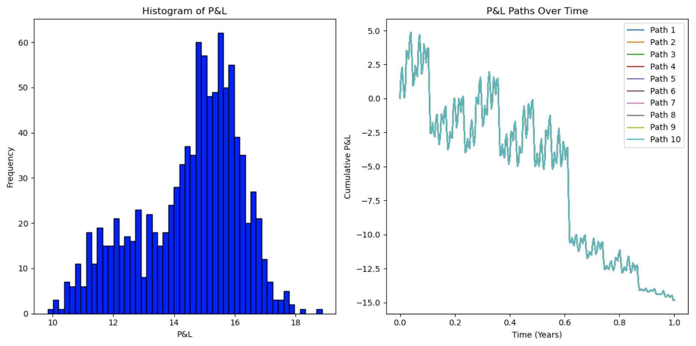
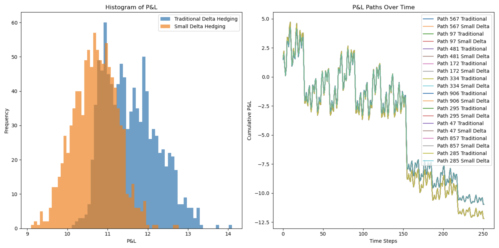

- Part I: Volatility Arb with improved GBM and Monte-Carlo
- Sub-part 1: Consider improvements to GBM asset evolution (using Milstein schemes)
- Sub-part 2: Under the condition of known , analytically and with Monte-Carlo confirm the items below
- 1. Actual Volatility Hedging
- (1) Using Milstein Schemes to Improve the GBM Model
- (2) Calculating the Option Price under Actual Volatility
- (3) Deriving the Delta Hedging Strategy and Calculating the Hedging Cost
- (4) Confirming that under known realized volatility, actual volatility hedging will result in a known total
- (5) Calculate the adjusted hedging cost using actual volatility and confirm whether the total equals the target total
- (6) With the specific expression for the hedging cost at hand, we can substitute it into the formula for calculating the total P&L and proceed with simplification
- 2. Implied Volatility Hedging
- 3. The total of implied volatility hedging depends on multiple parameters and Greeks. Here are the most important factors in the hedging strategy and their impact on
- 4. Monte Carlo simulation
- 1. Actual Volatility Hedging
- Sub-part 3: 其它分析
- Part II: Minimum Variance Delta
- 1. Begin with sorting my IV data
- 2. Compute your dependent variable and run the fitting on δBS,δ2BS
- 1. 首先，对隐含波动率数据进行排序 - 或者每个交易日，您将需要BS期权价格作为隐含波动率百分比、希腊值δ和vega：(Vt, δBS, νBS)。期权到期结构为1M、3M、6M、9M、12M，不需要每周到期。在这里需要做出关键选择，如果您要研究虚值看涨期权的Delta，除了约在ATM范围内的0.45 < δBS < 0.55之外 - 每个行权价都意味着为每个到期日分别建立一个a、b、c的历史
- 2. 计算你的因变量并在δBS，δ2BS上进行拟合。基于每日期权价格变动∆Vt的依赖方面，你将需要 (∆St, St) 以及上述提到的希腊值。确切的数据列将取决于你如何组织回归或进行 SLSQP
- 3. 对于研究项目，参数a、b、c可以是常数，但滚动估计本身是一种校准技术，因为对于每个到期日，你有时变的a、b、c（不是3个常数）。Hull White的建议是使用3个月的滚动窗口，然后将开始日期向后移动一天（3 × 22个观测值）- 你可以使用更短/更长的周期进行估计，或者向后移动5-10天。还要记住，期权的隐含波动率可以从均匀分布的配方中模拟出来
- 4. 对于模型验证，查看a、b、c随时间的变化 - 我们使用回归作为拟合工具，因此它们甚至可能不具有统计显著性。检查如果δMV - δBS给出一个（反向的）抛物线形状，绘制预期隐含波动率变化与Delta的关系
- 5. E[∆σimp] 预计为负值，但可能不是。您实现的对冲收益是否接近15%，并且在哪些Delta桶和到期日中？
Part I: Volatility Arb with improved GBM and Monte-Carlo
Sub-part 1: Consider improvements to GBM asset evolution (using Milstein schemes)
Volatility Arb (Volatility Arbitrage): This refers to a strategy that exploits the difference between realized volatility in the market and the implied volatility of option prices. By hedging against changes in volatility, investors attempt to profit from variations between different options.
Improved GBM (Improved Geometric Brownian Motion): Typically, geometric Brownian motion is used to simulate the price evolution of financial assets. Here, we can use either the Euler-Maruyama or Milstein methods to simulate the asset evolution of geometric Brownian motion (GBM).
The basic idea of the Euler-Maruyama method is to approximate the evolution over a small-time step as a constant, introducing a random term to simulate volatility.
The typical Euler-Maruyama evolution formula is: , where is the drift rate of the asset, is the volatility of the asset, and is a standard normal distribution random variable.
On the other hand, the Milstein method is an improvement over Euler-Maruyama, especially suitable for SDEs with stochastic volatility. By correcting for the derivative of volatility, it more accurately captures the evolution of volatility.
The Milstein evolution formula is: , where , , and have the same meanings as above, and is the second derivative of volatility.
The Milstein method is an improvement over Euler-Maruyama, especially suitable for models with stochastic volatility, providing more accurate results but with relatively higher computational complexity. In this paper, we will use the Milstein method to improve GBM.
What is Milstein method?
When using the Milstein method to simulate the asset evolution of geometric Brownian motion (GBM), it is typically done by approximating the stochastic differential equation (SDE) to obtain changes in asset prices over future time steps. Here are the detailed mathematical steps for simulating using the Milstein method:
We already have the SDE for GBM:
1. Taylor Expansion
We perform a Taylor expansion on the asset price over the time step . The first-order Taylor expansion formula is: , where is the first derivative of the asset price with respect to time.
2. Compute Second Derivative
We calculate the second derivative of the asset price with respect to time. We know the first derivative of the asset price is:
Now, we will calculate the second derivative with respect to time of this first derivative.
First, differentiate the first derivative with respect to time : , where represents the derivative of with respect to time, and is the second derivative of with respect to time. Since is a constant, is zero.
Next, we need to calculate , which is the first derivative with respect to time. Substitute the expression for the first derivative into the above equation:
Note that the derivative of the Brownian motion is white noise, i.e., , where is a standard normal distribution random variable.
3. Apply to Evolution Formula
Apply the second derivative to the Taylor expansion evolution formula: . This is the asset evolution formula that considers the second derivative of volatility.
What is low differentiation sequences and Brownian bridges?
1. For Low Discrepancy Sequences
Low Discrepancy Sequences are sets of points arranged according to certain rules, aiming to uniformly cover the sample space in high-dimensional settings. One common low discrepancy sequence is the Sobol sequence. Mathematically, low discrepancy sequences seek to minimize the discrepancy between the set points. This can be understood through the following mathematical definition:
Let be a set of points, and be the volume enclosing the point set . The discrepancy of the point set is defined as:
Here, is an interval in the sample space, and and are the volumes of the set and the interval , respectively. The goal of a low discrepancy sequence is to minimize the discrepancy.
2. For Brownian Bridge
The Brownian Bridge is a variation of Brownian motion, characterized by a continuous sample path that is not everywhere differentiable. The Brownian Bridge can be defined in terms of Brownian motion as: . Here, is the time parameter. Mathematically, the path of the Brownian Bridge is continuous everywhere but not differentiable everywhere. Specifically, it satisfies Holder continuity, meaning there exist constants and such that for all :
This indicates that the path of the Brownian Bridge does not exhibit sudden changes like Brownian motion but possesses a certain level of smoothness within small time intervals.
Sub-part 2: Under the condition of known , analytically and with Monte-Carlo confirm the items below
-
Confirm that actual volatility hedges lead to known aggregate .
-
Confirm and demonstrate that implied volatility hedges lead to uncertain aggregate, path-dependent and describe which parameters/Greeks they depend on.
Here is the theoretical analysis:
1. Actual Volatility Hedging
(1) Using Milstein Schemes to Improve the GBM Model
As mentioned above, we use the Sobol sequence to generate a Brownian bridge and apply it to the Milstein schemes to improve the GBM model, resulting in the asset price evolution formula:
(2) Calculating the Option Price under Actual Volatility
This is substituted into the Black-Scholes option pricing formula. We still consider the European call option, whose price is given by:
Where,
Substitute the evolution formula into the Black-Scholes formula
Where,
(3) Deriving the Delta Hedging Strategy and Calculating the Hedging Cost
-
Calculate the Delta value of the Delta hedging strategy
We already know the Delta formula for the option price with respect to the asset price:
Where, -
Calculate the hedging cost
The general formula for hedging cost is: Where, -
We substitute these formulas into the hedging cost formula
-
Calculate
-
Calculate
-
Calculate the future asset price
-
Calculate the hedging cost
-
(4) Confirming that under known realized volatility, actual volatility hedging will result in a known total
-
Substituting the actual volatility
When calculating , substitute the actual volatility into the model: This gives under the actual volatility. -
Calculate the Delta value of the Delta hedging strategy using known parameters and actual volatility
This is the Delta value in the Delta hedging strategy. -
Calculate the hedging cost corresponding to the Delta value of the Delta hedging under the original volatility
-
Adjust the quantity of Delta based on the relationship between the target total and the hedging cost
This gives the adjusted Delta value of the Delta hedging.
(5) Calculate the adjusted hedging cost using actual volatility and confirm whether the total equals the target total
(6) With the specific expression for the hedging cost at hand, we can substitute it into the formula for calculating the total P&L and proceed with simplification
-
First, let's list the expressions to be substituted
-
Hedging Cost ()
-
Adjusted Delta ()
-
Total P&L ()
-
-
Now, we substitute and into the formula for :
-
Next, we note that appears twice in the formula, and in the same way, we can combine them for simplification. Additionally, also appears twice with opposite signs, which can cancel each other out. The simplified formula is:
In this simplified formula:
- is divided by the change in stock price, reflecting the relationship between the target total P&L and the change in stock price.
- The final result is associated with the change in option price .
2. Implied Volatility Hedging
To rigorously integrate Greeks into the mathematical process of proving that implied volatility hedging results in uncertain and path-dependent total , we need to construct a more detailed model that reflects the impact of these Greeks on the hedging strategy. Below is a relatively detailed model and steps showing how these Greeks influence the of the hedging strategy.
(1) Asset Price Simulation
Asset price simulation still uses geometric Brownian motion, calculating the asset price for each time step using the following equation:
(2) Dynamic Execution of Hedging Strategy
This is a key step where we calculate and adjust the hedging position at each time point . The hedging position is mainly determined by Delta, but is also influenced by other Greeks.
-
Calculating Delta () and Gamma (): Calculate Delta and Gamma using the Black-Scholes model. Delta is used to determine the hedging position, while Gamma is used to estimate the change in Delta.
-
Adjusting the Hedging Position: The change in the hedging position depends on the change in Delta. However, due to the influence of Gamma, the change in Delta is not linear, so we need to consider the change in the asset price's effect on Delta:
(3) Calculating Hedging Costs and
-
Calculating Transaction Costs: Transaction costs are determined by the change in the asset price each time the position is adjusted. If represents the transaction cost per unit of asset, then the transaction cost at time is:
-
Calculating Holding Costs: Holding costs are determined by the cost of capital and the decay of the option's time value (Theta). If represents the cost of capital rate, then the holding cost can be expressed as:
-
Total Hedging Cost is the sum of transaction costs and holding costs
-
Total considers the final payoff of the option, the final value of the hedging position, and the total hedging cost:
This model and equations reflect the role of Delta, Gamma, Vega, and Theta, among other Greeks, in hedging strategies and how they influence the . By simulating this model, we can demonstrate the uncertainty and path dependency of resulting from implied volatility hedging.
However, it's worth noting that such simulation requires appropriate market data and parameters, and in actual application, the model itself may have limitations, and market conditions can be very variable.
3. The total of implied volatility hedging depends on multiple parameters and Greeks. Here are the most important factors in the hedging strategy and their impact on
(1) Implied Volatility (IV)
Implied volatility represents the market's expectation of the future volatility of the asset's price. Changes in implied volatility directly affect the price of options, especially those that are far from the expiration date, where the impact is more significant.
(2) Delta (Δ)
Delta represents the sensitivity of the option's price to changes in the price of the underlying asset. Hedging strategies typically aim to maintain a Delta-neutral position, reducing the direct impact of asset price changes on .
(3) Gamma (Γ)
Gamma represents the sensitivity of Delta to changes in the price of the underlying asset. A high Gamma value means that small changes in the asset's price may lead to significant changes in Delta, potentially increasing hedging costs due to the need for more frequent adjustments of the hedging position.
(4) Vega (ν)
Vega represents the sensitivity of the option's price to changes in volatility. Changes in implied volatility affect the time value and the overall value of the option, thereby affecting the hedging strategy's .
(5) Theta (Θ)
Theta represents the rate at which the option's value decays over time. Theta affects the value of the hedging position over time, especially as the option approaches its expiration date, where the impact of Theta becomes more pronounced.
(6) Rho (ρ)
Rho represents the sensitivity of the option's price to changes in the risk-free interest rate. In market environments where interest rates change significantly, Rho can have a substantial impact on .
(7) Expiration Time (T)
The expiration time of the option affects the time value of the option. The longer the time until expiration, the higher the time value of the option. The passage of time (Theta) causes the option's value to decay, thereby affecting the hedging strategy's .
(8) Volatility Skew
The volatility skew describes the relationship between implied volatilities of options with different strike prices. Changes in the volatility skew can affect the of hedging strategies involving options with different strike prices.
4. Monte Carlo simulation
This code is for a Monte Carlo simulation using the Milstein scheme for stock price simulation. It computes the P&L for both actual and implied volatility hedging strategies and then analyzes the results. The comments in the code explain the different steps of the process.
import numpy as np
import scipy.stats as stats
from sobol_seq import i4_sobol_generate
# Parameter settings
S0 = 100 # Initial stock price
K = 100 # Strike price
T = 1.0 # Time to maturity
r = 0.05 # Risk-free rate
sigma_actual = 0.3 # Actual volatility
sigma_iv = 0.2 # Implied volatility
mu = r # Expected return
num_paths = 1000 # Number of paths
num_steps = 252 # Number of time steps
# Monte Carlo simulation
PnL_actual = np.zeros(num_paths)
PnL_iv = np.zeros(num_paths)
dt = T / num_steps
# Generate Sobol sequence
sobol_seq = i4_sobol_generate(1, num_paths * num_steps)
sobol_seq = sobol_seq.reshape(num_paths, num_steps)
for i in range(num_paths):
S = np.zeros(num_steps + 1)
S[0] = S0
# Generate paths
for j in range(1, num_steps + 1):
Z = stats.norm.ppf(sobol_seq[i, j - 1])
# Milstein scheme
S[j] = S[j - 1] + r * S[j - 1] * dt + sigma_actual * S[j - 1] * np.sqrt(dt) * Z \
+ 0.5 * sigma_actual ** 2 * S[j - 1] * (Z ** 2 - 1) * dt
# Ensure S does not contain zero or negative values
S = np.maximum(S, 1e-10)
# Calculate option prices and Delta hedging
C = np.maximum(S - K, 0) # Intrinsic value of European call option
# Prevent division by zero or negative numbers
time_to_maturity = np.maximum(T - np.arange(num_steps + 1) * dt, 1e-10)
# Actual volatility hedging
d1_actual = (np.log(S / K) + (r + 0.5 * sigma_actual ** 2) * time_to_maturity) / (
sigma_actual * np.sqrt(time_to_maturity))
delta_actual = stats.norm.cdf(d1_actual) # Black-Scholes Delta
# Implied volatility hedging
d1_iv = (np.log(S / K) + (r + 0.5 * sigma_iv ** 2) * time_to_maturity) / (
sigma_iv * np.sqrt(time_to_maturity))
delta_iv = stats.norm.cdf(d1_iv) # Black-Scholes Delta
# Calculate P&L
portfolio_actual = -C[0] # Initial portfolio: -C means buying the option
portfolio_iv = -C[0]
for j in range(num_steps):
portfolio_actual += delta_actual[j] * (S[j + 1] - S[j]) # Actual volatility hedging
portfolio_iv += delta_iv[j] * (S[j + 1] - S[j]) # Implied volatility hedging
PnL_actual[i] = portfolio_actual + C[-1] # Final portfolio value plus option payoff at maturity
PnL_iv[i] = portfolio_iv + C[-1]
# Analyze results
mean_PnL_actual = np.mean(PnL_actual)
std_PnL_actual = np.std(PnL_actual)
mean_PnL_iv = np.mean(PnL_iv)
std_PnL_iv = np.std(PnL_iv)
print(f"Mean P&L for actual volatility hedging: {mean_PnL_actual}")
print(f"Standard deviation of P&L for actual volatility hedging: {std_PnL_actual}")
print(f"Mean P&L for implied volatility hedging: {mean_PnL_iv}")
print(f"Standard deviation of P&L for implied volatility hedging: {std_PnL_iv}")
The output is as follows:
-
Mean P&L for actual volatility hedging: -6.225461631984515
This indicates that when hedging with actual volatility, the average P&L is negative, suggesting that the hedging strategy incurred losses on average. This may imply that actual volatility hedging did not completely offset the risk introduced by price fluctuations. -
Standard deviation of P&L for actual volatility hedging: 7.461848805125476
The standard deviation represents the volatility or risk of P&L. A larger standard deviation indicates higher volatility in P&L. In this case, the P&L volatility for actual volatility hedging is relatively high, suggesting that the hedging strategy performs inconsistently under different market conditions. -
Mean P&L for implied volatility hedging: -9.148463173169842
This signifies that when hedging with implied volatility, the average P&L is also negative, indicating losses on average. This may suggest that implied volatility failed to accurately predict future actual volatility. -
Standard deviation of P&L for implied volatility hedging: 8.326580230614766
The standard deviation of P&L for implied volatility hedging. Compared to actual volatility hedging, the P&L volatility for implied volatility hedging may be higher, indicating a more unstable performance of the hedging strategy under different market conditions.
Sub-part 3: 其它分析
1.
衡量期权Delta相对于标的资产价格变动的变化率。时间依赖的考虑了这种敏感度随着期权临近到期如何变化。
(1) 对P&L的影响
临近到期时较高的Gamma可能导致Delta发生显著变化，需要频繁调整对冲头寸。这可能会增加交易成本，从而影响P&L。相反，较低的Gamma意味着对标的价格变化的敏感度较低，可能导致对冲头寸更稳定但可能反应不够灵敏。
(2) 代码实现
import numpy as np
import scipy.stats as stats
from sobol_seq import i4_sobol_generate
# 参数设置
S0 = 100 # 初始股价
K = 100 # 行权价
T = 1.0 # 到期时间
r = 0.05 # 无风险利率
sigma_actual = 0.3 # 实际波动率
mu = r # 预期收益率
num_paths = 1000 # 路径数量
num_steps = 252 # 时间步数量
# 蒙特卡洛模拟
PnL = np.zeros(num_paths)
Gamma_t_values = [] # 用于存储各个路径上的Gamma值
dt = T / num_steps
# 生成Sobol序列
sobol_seq = i4_sobol_generate(1, num_paths * num_steps)
sobol_seq = sobol_seq.reshape(num_paths, num_steps)
for i in range(num_paths):
S = np.zeros(num_steps + 1)
S[0] = S0
gamma_path = np.zeros(num_steps) # 存储每个时间步的Gamma值
# 生成路径
for j in range(1, num_steps + 1):
Z = stats.norm.ppf(sobol_seq[i, j - 1])
S[j] = S[j - 1] + r * S[j - 1] * dt + sigma_actual * S[j - 1] * np.sqrt(dt) * Z \
+ 0.5 * sigma_actual ** 2 * S[j - 1] * (Z ** 2 - 1) * dt
S = np.maximum(S, 1e-10)
# 计算期权价格和Delta、Gamma对冲
d1 = (np.log(S / K) + (r + 0.5 * sigma_actual ** 2) * (T - np.arange(num_steps + 1) * dt)) / (
sigma_actual * np.sqrt(T - np.arange(num_steps + 1) * dt))
d2 = d1 - sigma_actual * np.sqrt(T - np.arange(num_steps + 1) * dt)
C = S * stats.norm.cdf(d1) - K * np.exp(-r * (T - np.arange(num_steps + 1) * dt)) * stats.norm.cdf(d2)
delta = stats.norm.cdf(d1)
gamma = stats.norm.pdf(d1) / (S * sigma_actual * np.sqrt(T - np.arange(num_steps + 1) * dt))
# 计算P&L和记录Gamma
portfolio = -C[0] # 初始投资组合：-C表示购买期权
for j in range(num_steps):
portfolio += delta[j] * (S[j + 1] - S[j]) # Delta对冲
gamma_path[j] = gamma[j]
PnL[i] = portfolio + C[-1] # 最终组合价值加上期权到期价值
Gamma_t_values.append(gamma_path)
# 分析结果
mean_PnL = np.mean(PnL)
std_PnL = np.std(PnL)
mean_Gamma_t = np.mean(Gamma_t_values, axis=0) # 计算每个时间步的平均Gamma值
print(f"Mean P&L: {mean_PnL}")
print(f"Standard deviation of P&L: {std_PnL}")
# 绘图展示Gamma随时间的变化
import matplotlib.pyplot as plt
plt.plot(mean_Gamma_t)
plt.xlabel('Time Steps')
plt.ylabel('Mean Gamma')
plt.title('Mean Gamma Over Time')
plt.show()
(3) 输出结果分析
-
Mean P&L: -20.456716417970334
-
Standard deviation of P&L: 7.461848805125476
-
figure:

图表显示，Mean Gamma随时间步的增加而上升，并在接近期权到期时显著增加。这是一个符合期权定价理论的预期结果。具体地：
-
Gamma值的增长：在期权的有效期内，Gamma值通常在期权临近到期时变得更大。这是因为，随着到期日的临近，标的资产的微小价格变动对期权内在价值的影响增大，Delta变化加快，从而Gamma值上升。
-
期权到期前的尖峰：从图中可以看出，Gamma值在时间序列的最后部分出现尖峰，这表明期权在到期前的最后几个时间步内变得非常敏感，即使是很小的标的资产价格变动也会导致Delta的显著变化。
-
对冲策略的影响：高Gamma值意味着对冲者需要更频繁地调整其对冲头寸，尤其是在期权到期前。这可能导致交易成本的上升，并可能引起P&L的波动。
-
2. 项
这个项结合了无风险利率的平方(r2)，隐含波动率()和一个小时间间隔()。
(1) 对P&L的影响
无风险利率影响持有头寸的成本，而隐含波动率影响期权的时间价值。这些因素与时间的推移()的相互作用可能对P&L产生复杂的影响。
(2) 代码实现
import numpy as np
import scipy.stats as stats
from matplotlib import pyplot as plt
from sobol_seq import i4_sobol_generate
# 参数设置
S0 = 100 # 初始股价
K = 100 # 行权价
T = 1.0 # 到期时间
r = 0.05 # 无风险利率
sigma_actual = 0.3 # 实际波动率
sigma_imp = 0.2 # 隐含波动率
mu = r # 预期收益率
num_paths = 1000 # 路径数量
num_steps = 252 # 时间步数量
dt = T / num_steps # 时间步长度
# 生成Sobol序列
sobol_seq = i4_sobol_generate(1, num_paths * num_steps).flatten()
# 蒙特卡洛模拟
PnL = np.zeros(num_paths)
time_steps = np.linspace(0, T, num_steps + 1)
for i in range(num_paths):
S = np.zeros(num_steps + 1)
S[0] = S0
r_squared_term = r**2 * dt
sigma_imp_term = sigma_imp * dt
# 生成路径
for j in range(1, num_steps + 1):
Z = stats.norm.ppf(sobol_seq[i * num_steps + j - 1])
S[j] = S[j - 1] * (1 + mu * dt + sigma_actual * np.sqrt(dt) * Z)
# 计算期权Delta对冲
d1 = (np.log(S[:-1] / K) + (r + 0.5 * sigma_imp**2) * (T - np.arange(num_steps) * dt)) / (sigma_imp * np.sqrt(T - np.arange(num_steps) * dt))
delta = stats.norm.cdf(d1)
# 计算对冲成本
cost_of_hedging = np.cumsum(delta * (S[1:] - S[:-1]))
# 计算P&L
final_option_value = max(S[-1] - K, 0)
PnL[i] = final_option_value - cost_of_hedging[-1] - (r_squared_term - sigma_imp_term)
# 分析结果
mean_PnL = np.mean(PnL)
std_PnL = np.std(PnL)
print(f"Mean P&L: {mean_PnL}")
print(f"Standard deviation of P&L: {std_PnL}")
# 输出图像展示
plt.figure(figsize=(12, 6))
# P&L的直方图
plt.subplot(1, 2, 1)
plt.hist(PnL, bins=50, color='blue', edgecolor='black')
plt.title('Histogram of P&L')
plt.xlabel('P&L')
plt.ylabel('Frequency')
# P&L随时间变化的路径
plt.subplot(1, 2, 2)
for i in range(min(10, num_paths)): # 只绘制部分路径
plt.plot(time_steps, np.cumsum(np.insert(delta * (S[1:] - S[:-1]), 0, 0)), label=f'Path {i+1}')
plt.title('P&L Paths Over Time')
plt.xlabel('Time (Years)')
plt.ylabel('Cumulative P&L')
plt.legend()
plt.tight_layout()
plt.show()
(3) 输出结果分析
-
Mean P&L: 14.489793353691867
这表示在您的蒙特卡洛模拟中，对冲策略平均盈利约为14.49单位货币。
这是一个正值，意味着在模拟期间，平均而言，对冲策略是盈利的。 -
Standard deviation of P&L: 1.6896365372497164
这个值表示在不同模拟路径上P&L的波动性或分散程度。
标准差较小，意味着大多数路径上的盈亏相对于平均值而言没有很大的波动；换句话说，对冲策略的结果比较稳定。
低标准差通常被视为风险较低，因为P&L的波动较小，预测未来绩效的不确定性较低。 -
figure
-
直方图（Histogram of P&L）
这个直方图显示了P&L（盈亏）的分布情况。
大多数的P&L值集中在一个范围内，这表明大部分的对冲路径产生了相似大小的P&L。
P&L分布看起来是单峰的，这意味着大多数对冲结果都围绕着某个中心值波动。
如果直方图显示的P&L值主要集中在正值，那么表明对冲策略通常是盈利的；如果主要集中在负值，则表明对冲策略通常是亏损的。 -
P&L路径图（P&L Paths Over Time）
这个图表显示了选取的十条路径的累计P&L随时间的变化情况。
每条路径代表一个特定的股价路径和相应的对冲操作所导致的累计P&L变化。
从图中可以看出，不同路径的P&L随时间变化的趋势大致相似，但具体数值各不相同，表明市场条件和对冲操作的随机性对P&L有显著影响。
如果路径在时间序列的后期出现较大跌幅，这可能表明期权接近到期时P&L的不稳定性增加，或者表明在某些路径中发生了较大的市场价格波动，导致对冲策略的P&L波动。
-
3. 使用较小Delta对冲的含义
根据第二部分MVD（最小方差Delta）建模，使用较小的delta（即使对冲误差的方差最小化的delta）对冲具有含义。
(1) 对P&L的影响
使用较小的delta对冲旨在最小化对冲投资组合的方差，可能导致更稳定的P&L概况。然而，它也可能意味着投资组合对标的资产价格的大幅度变动反应不够灵敏，这可能是有利的，也可能是不利的，取决于市场的走势。
(2) 代码实现
import numpy as np
import scipy.stats as stats
import matplotlib.pyplot as plt
from sobol_seq import i4_sobol_generate
# Parameter settings
S0 = 100 # Initial stock price
K = 100 # Strike price
T = 1.0 # Time to maturity
r = 0.05 # Risk-free rate
sigma_actual = 0.3 # Actual volatility
mu = r # Expected return
num_paths = 1000 # Number of paths
num_steps = 252 # Number of time steps
dt = T / num_steps # Time step size
# Generate Sobol sequence
sobol_seq = i4_sobol_generate(1, num_paths * num_steps).flatten()
# Monte Carlo simulation
PnL_traditional = np.zeros(num_paths)
PnL_small_delta = np.zeros(num_paths)
for i in range(num_paths):
S = np.zeros(num_steps + 1)
S[0] = S0
# Generate paths
for j in range(1, num_steps + 1):
Z = stats.norm.ppf(sobol_seq[i * num_steps + j - 1])
S[j] = S[j - 1] * (1 + mu * dt + sigma_actual * np.sqrt(dt) * Z)
# Calculate option Delta hedging
d1 = (np.log(S[:-1] / K) + (r + 0.5 * sigma_actual ** 2) * (T - np.arange(num_steps) * dt)) / (sigma_actual * np.sqrt(T - np.arange(num_steps) * dt))
delta_traditional = stats.norm.cdf(d1)
delta_small = delta_traditional * 0.9 # Using a smaller delta for hedging
# Calculate P&L
option_payoff = np.maximum(S[-1] - K, 0)
PnL_traditional[i] = option_payoff - np.cumsum(delta_traditional * (S[1:] - S[:-1]))[-1]
PnL_small_delta[i] = option_payoff - np.cumsum(delta_small * (S[1:] - S[:-1]))[-1]
# Analyze results
mean_PnL_traditional = np.mean(PnL_traditional)
std_PnL_traditional = np.std(PnL_traditional)
mean_PnL_small_delta = np.mean(PnL_small_delta)
std_PnL_small_delta = np.std(PnL_small_delta)
# Plotting the results
plt.figure(figsize=(14, 7))
# Histogram of traditional Delta hedging P&L
plt.subplot(1, 2, 1)
plt.hist(PnL_traditional, bins=50, alpha=0.7, label='Traditional Delta Hedging')
plt.hist(PnL_small_delta, bins=50, alpha=0.7, label='Small Delta Hedging')
plt.xlabel('P&L')
plt.ylabel('Frequency')
plt.title('Histogram of P&L')
plt.legend()
# P&L paths over time for a few paths
plt.subplot(1, 2, 2)
sample_paths = np.random.choice(num_paths, size=10, replace=False)
for i in sample_paths:
plt.plot(np.cumsum(delta_traditional * (S[1:] - S[:-1])), label=f'Path {i+1} Traditional')
plt.plot(np.cumsum(delta_small * (S[1:] - S[:-1])), label=f'Path {i+1} Small Delta', alpha=0.7)
plt.xlabel('Time Steps')
plt.ylabel('Cumulative P&L')
plt.title('P&L Paths Over Time')
plt.legend()
plt.tight_layout()
plt.show()
# Print the results
print(f"Mean P&L for traditional volatility hedging: {mean_PnL_traditional}")
print(f"Standard deviation of P&L for traditional volatility hedging: {std_PnL_traditional}")
print(f"Mean P&L for small delta hedging: {mean_PnL_small_delta}")
print(f"Standard deviation of P&L for small delta hedging: {std_PnL_small_delta}")
(3) 输出结果分析
-
Mean P&L for traditional volatility hedging: 11.578686616741932
这意味着对冲策略平均盈利约为11.58单位货币 -
Standard deviation of P&L for traditional volatility hedging: 0.6601932633974179
传统Delta对冲的标准差为0.6602，说明P&L的波动范围相对较宽。 -
Mean P&L for small delta hedging: 10.689379414770666
小Delta对冲的平均P&L为10.6894，略低于传统Delta对冲，但差距不大。 -
Standard deviation of P&L for small delta hedging: 0.5394603400279799
小Delta对冲的标准差为0.5395，较传统Delta对冲的波动性更小，表明使用小Delta对冲的稳定性更高。 -
figure
-
直方图（Histogram of P&L）
直方图显示了两种对冲策略的P&L分布情况。传统Delta对冲策略的P&L分布（蓝色）显示出比较宽的分布，而小Delta对冲策略的P&L分布（橙色）则相对狭窄。
这表明传统Delta对冲策略的盈亏波动性较大，而小Delta对冲策略则更为稳定，其P&L的波动较小。 -
P&L路径图（P&L Paths Over Time）
该图表显示了传统和小Delta对冲策略的几条随机选取的路径。可以看到，虽然两种策略的路径在趋势上相似，但是传统Delta策略的波动性较高。
对于每条路径，小Delta策略的累计P&L变化较为平滑，这意味着其对市场变动的反应性降低，但在大市波动时可能会减少潜在的亏损。
-
综合上述分析，小Delta对冲策略在降低P&L波动（提高稳定性）方面取得了一定的效果，但也牺牲了一些盈利潜力。这些发现验证了对冲策略中稳定性与响应性之间的权衡关系。
Part II: Minimum Variance Delta
Note: 我从 OptionsDX.com 上下载了近三年的S&P500 index options data. 我将会选择看涨期权的数据进行以下研究。
原始数据demo如下：
| QUOTE_UNIXTIME | QUOTE_READTIME | QUOTE_DATE | QUOTE_TIME_HOURS | UNDERLYING_LAST | EXPIRE_DATE | EXPIRE_UNIX | DTE | C_DELTA | C_GAMMA | C_VEGA | C_THETA | C_RHO | C_IV | C_VOLUME | C_LAST | C_SIZE | C_BID | C_ASK | STRIKE | P_BID | P_ASK | P_SIZE | P_LAST | P_DELTA | P_GAMMA | P_VEGA | P_THETA | P_RHO | P_IV | P_VOLUME | STRIKE_DISTANCE | STRIKE_DISTANCE_PCT |
|---|---|---|---|---|---|---|---|---|---|---|---|---|---|---|---|---|---|---|---|---|---|---|---|---|---|---|---|---|---|---|---|---|
| 1696276800 | 2023-10-02 16:00 | 2023-10-02 | 16.000000 | 4288.240000 | 2023-10-02 | 1696276800 | 0.000000 | 0.002610 | 0.000340 | 0.018000 | -0.025280 | 0.000200 | 0.143600 | 1858.000000 | 0.050 | 0 x 2077 | 0.000 | 0.050 | 4365.000000 | 77.500 | 79.000 | 1 x 8 | 79.870 | -0.920040 | 0.002600 | 0.281380 | -1.489660 | -0.048660 | 0.279100 | 29.000000 | 76.800000 | 0.018000 |
Please review this table to ensure the data is correctly aligned and accurately represented. If there are any specific formatting or content adjustments needed, feel free to let me know!